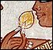

Lotus flowers
Lotus flowers

The ancient Egyptians liked the delicate smell of the lotus flower and sometimes gave them to guests at a banquet.
The ancient Egyptians believed that at the beginning of time a lotus flower grew out of the water and bloomed. In the blossom was the sun-god.